注意：本教程使用的数据采集于 Thermo Q-Exactive Plus 仪器。如果使用的数据采集于 Sciex TripleTOF 6600，请参阅本教程的另一版本 Skyline DIA TTOF。
本教程使用的数据是一个SWATH-MS 数据集，它通过使用18个可变宽度窗口母离子分离方案（Bruderer R. 等人，MCP 2015）和 1 小时梯度，采集于QqOrbi 仪器（Q-Exactive Plus、Thermo）。通过本教程，您将了解如何使用 Skyline对肽段以及推断的蛋白质检测和定量进行靶向分析。
用于采集数据的样品复制于LFQBench研究。在这项研究中，用于基准化定量分析的样品由三个物种的蛋白质组以确定的比例混合组成。
为了处理DIA数据集，您首先要在Skyline中设置所有相关参数；然后，您需要从原始数据文件提取定量的信息；最后，您要通过导入DDA数据的搜索结果创建一个质谱图库，从而产生肽段的查询参数。
[图片取自 Navarro, P. et al. A multicenter study benchmarks software tools for label-free proteome quantification. Nature Biotech 34, 1130–1136 (2016) 和 Bruderer, et al. Extending the Limits of Quantitative Proteome Profiling with Data-Independent Acquisition and Application to Acetaminophen-Treated Three-Dimensional Liver Microtissues.” Molecular & Cellular Proteomics 14, (2015)]
开始本教程之前，请下载下列 ZIP 文件：
https://skyline.ms/tutorials/DIA-QE.zip
将文件解压到您电脑上的某个文件夹，比如：
C:\Users\brendanx\Documents
该操作将创建一个新文件夹：
C:\Users\brendanx\Documents\DIA-QE
如果您在开始学习本教程之前就一直在用 Skyline，最好将 Skyline 恢复为默认设置。操作如下：

现在，Skyline 当前实例中的设置已重置为默认值。
由于本教程涵盖蛋白质组学主题，因此务必将用户界面设置为“蛋白质组学界面”。

Skyline 将在蛋白质组模式下运行，Skyline 右上角 将随之显示蛋白质图标 。
。
对于 DIA 分析，您需要强制 Skyline 对提取的所有定量离子对的峰面积进行积分操作。操作如下：
如果您知道所要查看的位置，可以使用 Skyline 中的各种菜单选项执行以下所有步骤。为简化 DIA 的正常工作流程，可以改为使用“向导”，它会逐步引导您完成 Skyline 运行分析所需要的关键选择。先从 DDA 肽段谱图匹配结果构建谱图库，然后指定一组 DIA 运行以从中提取色谱图，接着指定各种设置，最后指定您想查询的目标本身。
您将对每个 A 和 B 样品进行一次 DDA 运行分析来构建谱图库。我们已使用 Comet 搜索引擎执行了 DDA 搜索，并使用 PeptideProphet 进行了后续处理 - 请参阅此链接，了解 Skyline 所支持的更多 DDA 搜索：https://skyline.ms/wiki/home/software/Skyline/page.view?name=building_spectral_libraries。您将从PeptideProphet 的输出文件interact.pep.xml开始，该文件包含这两个 DDA 文件的数据库搜索结果。
要开始，请执行如下操作：
Skyline 会指示您需要保存当前文档，这样它便能获知要在电脑磁盘中执行分析的位置。
导入肽段搜索向导应显示如下：

注意：0.95 是DDA 数据库搜索中每个肽段谱图匹配度计算的 PeptideProphet 概率阈值 - 在这个特定的数据集中，这相当于 0.2% 的 PSM 错误发现率，但此值在不同数据集中会有所不同，因此应在此处输入您要使用的错误发现率的概率阈值。
向导中的谱图库页面现在应显示如下：

Skyline开始创建谱图库，并在构建肽段搜索库表单中显示进度。创建的谱图库将通过加入样品中的Biognosys iRT 标准肽段搜索结果校准 iRT 值。操作成功后，呈现如下所示的表单：


Skyline 会询问您是否要重新校准iRT 标准值到已计算并显示在上图中的回归线。
Skyline 呈现出一长串不确定匹配的肽段清单。换言之，这些肽段的唯一证据来自与多个肽段相匹配的谱图，从而导致这些谱图和匹配的肽段不适用于后续的靶向分析。
在显示的提取色谱图页面中，您可以告知 Skyline 在哪里可以找到将用于色谱图提取、峰检测和峰面积计算的 DIA 数据文件。
浏览结果文件应显示如下：

导入肽段搜索表单应显示如下：

Skyline 会显示一个表单，询问您是否移除公共前缀 "collinsb_X1803_17"，从而使Skyline 界面中显示的重复测定名称更短，并且更易于使用。
执行如下操作以跳过添加修饰页面：
在配置离子对设置页面中，对默认值进行以下更改：
| 注意：您可以保留表示母离子的离子类型 "p"，Skyline 将从 DIA 数据文件中的 MS1 谱图中提取覆盖母离子同位素分布的色谱图。不过，为了简化本教程并减少处理时间和输出文件大小，下面的描述中仅处理从 DIA MS/MS 谱图中提取的碎片离子色谱图。 |
导入肽段搜索表单应显示如下：

Skyline 显示配置全扫描设置页面。
注意：这些提取设置取决于数据采集所用仪器的类型和设置。每个数据集的最佳提取设置可能会略有不同。在本项分析中，您将使用质心数据以节省空间。因此，您应当选择“质心”并指定质量精度为 "20" ppm 进行提取。仪器的分辨能力可以通过轮廓模式数据指定。
对默认值进行以下更改：
现在，您需要根据仪器上定义的数据非依赖性采集的参数来定义新的分离方案。
注意：在本例中，我们使用了 18 个可变宽度窗口，它们覆盖从 400 到 1220 质荷比的范围，采用 2 质荷比重叠，以支持三重四极杆范围边缘的 1 质荷比排除边距。
随即弹出编辑分离方案表单，从中执行以下操作。
此时编辑分离方案表单应显示如下：

Skyline 已解出在质谱仪上测得的 DIA 分离范围的开始和结束质荷比值。可以看出它们重叠了 2 质荷比，为补偿重叠，Skyline 在分离窗口的每侧增加了 1 质荷比边距，在色谱图提取过程中它将会被排除在外。要在操作中查看此项：
您会看到开始和结束值向内偏移 1 质荷比，并且范围不再重叠。这些是 Skyline 在将肽段母离子质荷比值与采集的谱图进行匹配，来进行碎片离子色谱图提取时将使用的范围。
要查看分离方案的视觉效果：
随即显示下面这样的表单：

您可以单击并拖动矩形进行放大，或是使用鼠标滚轮查看边距。如果取消选中显示边距后又重新选中，图形名称将在测量窗口和提取窗口之间切换，并且粉红色的边距条消失后又会重新出现。图中没有红色的显示间距或黄色的显示单循环重叠，二者均为 DIA 分离方案设计中的错误。
导入肽段搜索向导现在显示如下：
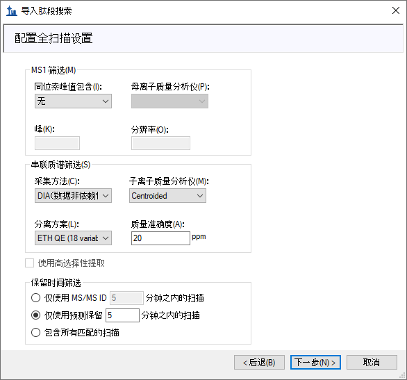
您会看到导入 FASTA页面，从中执行下列操作：
| 注意：此时您可以选择执行蛋白质组学范围分析，导航到 "interact.pep.xml" 文件所在的 DDA_search 子文件夹，然后双击肽段搜索中采用的完整 FASTA 序列文件 "napedro_3mixed_human_yeast_ecoli_20140403_iRT_reverse.fasta"。虽然此操作将产生更多目标，花费的处理时间也更多，但在大多数现代笔记本电脑上仍然可行。 |
导入肽段搜索向导现在显示如下：
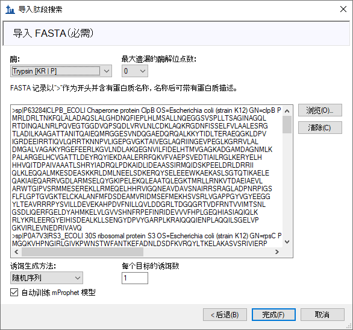
此时应当显示一张表单，其中描述了根据您的设置和所提供的 FASTA 序列文本计算得出的目标，如下所示：
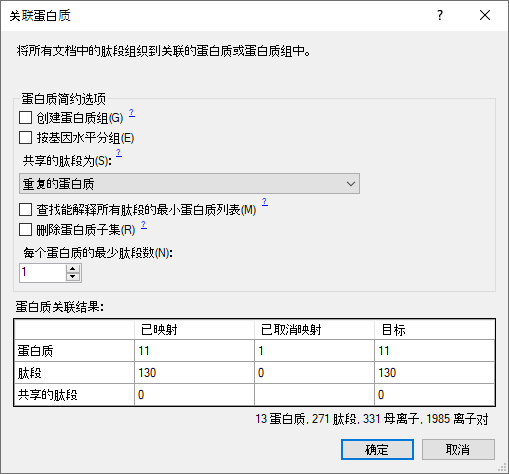
可以发现，每个蛋白质的最少肽段数过滤器设置为 "1" 时，FASTA 文件中的 13 个蛋白质产生的剩余蛋白质为 12 个。这是因为有 1 个蛋白质没有在谱图库中找到肽段。如果单击保留全部，您会看到警告“将添加 1 个空蛋白质”，但请先切换回去，以避免将空蛋白质添加到目标列表中。
Skyline 开始提取色谱图，在标准的 i7 4 核处理器上显示如下：
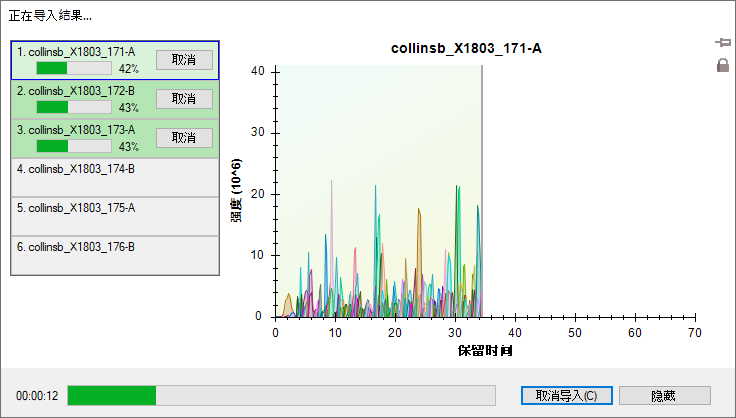
在 6 核及以上的处理器中，所有文件将并行处理；在大多数配备双核处理器的笔记本电脑上，导入过程中一次处理 2 个文件。
导入完成后，Skyline 将显示您在导入肽段搜索向导中的导入 FASTA 页面上请求的 mProphet 模型。其显示如下：
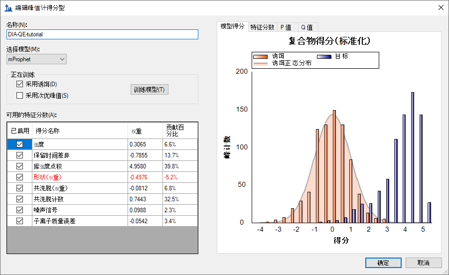
系统采用默认的分数对 Skyline 在每组色谱图中找到的 10 个最优峰重新评分，并将这些峰重新选择为 mProphet 得分最高的峰。这些 mProphet 分数（在 Skyline 中叫做检测 Z 得分）进行扩展后，以使 1.0 表示与平均 mProphet 分数为 1 的标准偏差，从而实现所请求的随机排序诱饵肽段相似最优峰的分布。其中每个分数都被分配了一个 q 值（在 Skyline 中叫做检测 Q 值）。
接下来需要定义哪些样品属于哪个实验组：
在此实验中有两个条件：Condition A - 样本中蛋白质组组成为 20％ 的大肠杆菌、15％ 的酵母和 65％ 的人类蛋白质，Condition B - 其组成为 5％ 的大肠杆菌、30％ 的酵母和65％ 的人类蛋白质。
定义注释窗口应如下所示：
此时将返回文档设置窗口。
现在，您可以为导入的重复测定添加注释：
随即打开文档网格窗口，如果您以前从未用过它，则会显示蛋白质报告：
如下面的截屏中所示，使用键盘上的 A，B，1、2、3、Enter 和方向键对样品进行注释：

为便于查看，您现在可以按条件将数据拆分到 Skyline 窗口中的 2 个窗格。
注意：如果此阶段仍在导入数据，需等待完成后以保存文档。
接下来，您要手动检查一些色谱图和基础谱图。要执行这项操作，您需要显示保留时间和峰面积视图：
现在这两个视图应该都可见了。您可以执行以下操作在屏幕上进行最佳配置：
您可以在库匹配窗口中执行以下所示的相同操作。
注意：要停靠这样的窗口，必须将鼠标箭头光标放置在某个停靠图标的内部（本例中停靠在顶部）。一旦在按住鼠标左键的情况下开始拖动，如果此时释放鼠标左键，Skyline 将在放置窗口的位置显示停靠图标和一个透明的蓝色矩形。
| 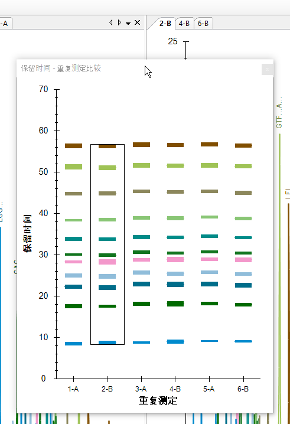 | 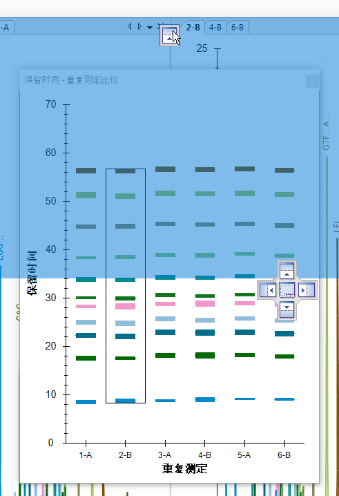 |
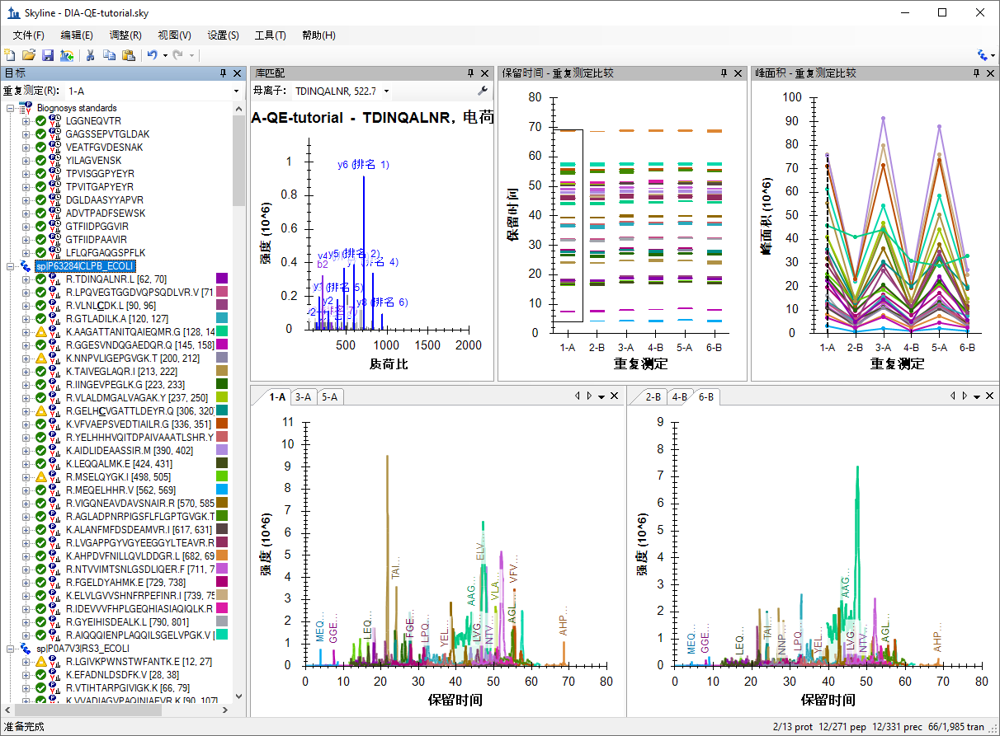
您应当会在各种图表（色谱图、峰面积和保留时间重复测定图）中看到该蛋白质的所有肽段。上面的截屏展示了一个蛋白质被选择后，组成它的所有肽段被汇总在每个视图中（除了库匹配窗口未显示任何内容）。
根据您在峰面积-重复测定比较图中看到的结果，该蛋白质是否受到差异化的调控？回想一下，对于大肠杆菌，A:B 之间的预期倍数变化率为 4:1。
您将在所有这些视图中获得该肽段的特定信息，如下所示：
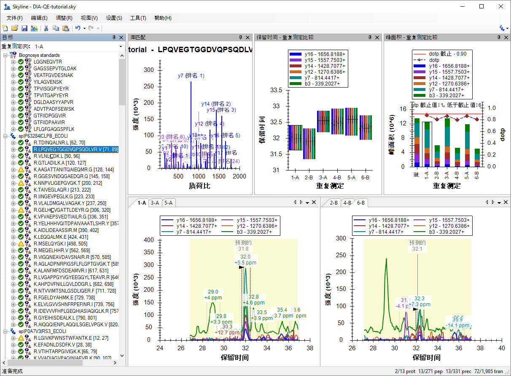
检查属于该蛋白质的其余肽段的峰面积模式。蛋白质肽段的定量模式是否与预期的差异化调控模式 (4:1) 一致？
注意：如果给定的肽段序列有多个母离子电荷状态，它们将被分别提取并评分。您可以单击肽段序列旁边的 +，然后单击各个电荷状态来进行查看。
从蛋白质水平视图和肽段水平视图检查重复测定峰面积。峰面积是否与预期的比率 (1:1) 一致？酵母蛋白质呢（是否为预期的1:2比率）？
请注意，如果将光标悬停在色谱图曲线上，曲线上就会出现与该曲线同色的圆圈。
Skyline 将在从中提取该色谱图点的谱图上打开全扫描视图，并放大您选择的离子。
进一步手动探索数据（包括一些诱饵）。
您可以检查质量精度和保留时间预测准确度，以确定是否使用了最佳提取参数，或是否需要进行某些调整以改善结果。
这将显示质量误差在数据集中的分布。提取窗口 (±20 ppm) 能否进一步优化？一般情况下，平均误差 +/- 3 个标准偏差便足以应对。但是，如果显示的直方图被截止，并且在极端情况下计数很高，则可能需要增宽提取窗口。
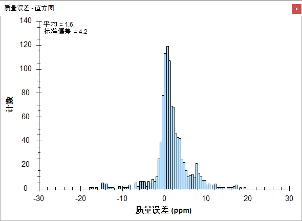
请注意，此分布涵盖全部 6 次运行。为进一步理解每次运行的代表性，请执行以下操作：
您会看到平均值介于 1.3 到 1.8 之间，而标准偏差值介于 3.7 到 4.4 之间。在最极端的情况下使用简单的计算方式，即平均值 + 3 * SD = 1.8 + 3 * 4.4 = 15 PPM，这似乎表明 15 PPM 的公差足以用于这些数据。
还要查看诱饵的质量误差：
要查看基于 iRT 肽段和目标肽段库 iRT 值预测目标肽段保留时间而使用的线性回归：
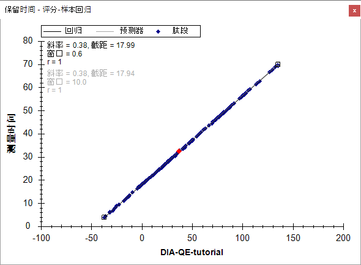
随即显示该数据集中与预计保留时间的偏差。能否针对此分析进一步优化提取窗口（±5 分钟）？这时请进一步检查诱饵。
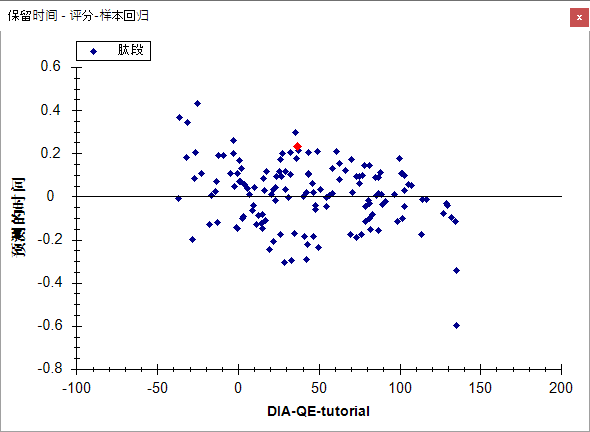
注意：因为这项分析的谱图库是通过对相同样品进行并排分析构建而成，所以保留时间预测的准确性非常好。在对不同仪器不同时间不同样品分析创建的外部谱图库中，保留时间将导致这些预测中的误差较大。
您已经进行了一些常规验证，证明使用 Skyline 进行的数据处理没有严重缺陷。mProphet 评分模型中包含所有可用的特征评分，并且该模型在目标和诱饵（用于模拟不可检测的随机目标）之间实现了合理的分离。您或许觉得 RT 提取范围可以从 +/- 5 收紧到 3。这些设置显然有用，并且最终的 mProphet 模型也看似可以接受。
这种对数百个肽段进行的分析通常需要针对每个目标进行手工分析，该操作既耗时，又容易出错。当前的分析则可以扩展到整个包含三个物种（人类、酵母、大肠杆菌）蛋白序列的 FASTA 文件，即全蛋白组水平分析，其中包含数以万计的肽段。研究人员通常不会单独考虑每个肽段，而是进行某些类型的群组比较，然后跟进那些以有趣的方式明显变化的肽段或蛋白质。
要在 Skyline 中执行简单的成对群组比较，请执行以下操作：
编辑群组比较表单应如下显示。
要查看刚刚创建的群组比较：
这时会出现一个表格，显示肽段水平的倍数变化以及已调整的 p 值（错误发现率 - FDR 的估计值），这些值用于 A、B 样品混合物之间的比较。
检查表中某些肽段的倍数变化估计值，同时要记住它们来自哪个物种以及预期的比率（人类蛋白质 1:1，酵母 1:2，大肠杆菌 4:1）。考虑已调整的 p 值以及您可能期望的值。
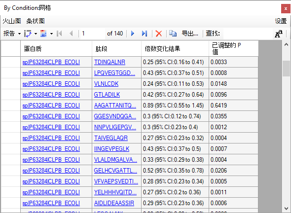
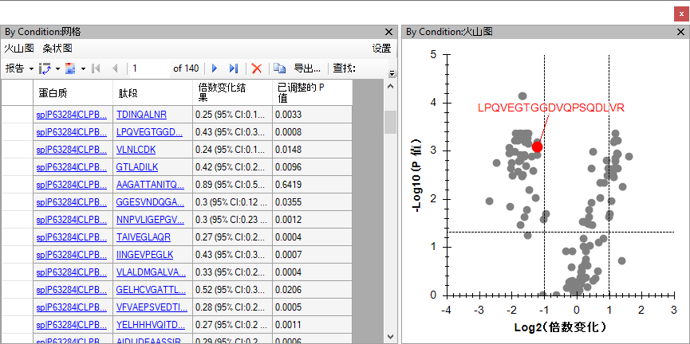
对于大多数变化的肽段，已可以看到出现在预期比率附近和 5％ FDR 水平线以上的点簇。为了更好地了解哪些点属于哪种生物体，请执行以下操作：
表单应显示具有匹配蛋白质名称的肽段列表，如下所示：
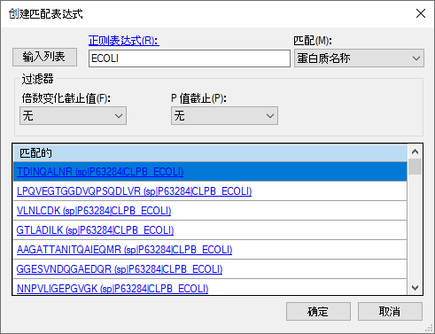
火山图格式表单应显示如下：
火山图应显示如下：
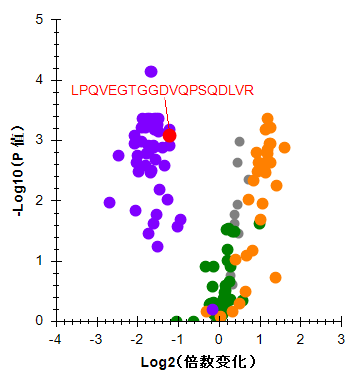
请注意，图中仍有一些灰点。您可以单击其中任意的点，这样它们在目标视图中将处于选中状态，并且将在图中以红色显示测试。您也可以将鼠标光标悬停在任何点上以获取更多信息。通过这种方式，可以看到灰点属于 iRT 标准肽段。您可以执行以下操作，同时从网格和图表中过滤这些灰点：
此时将删除火山图中的灰点。您可以尝试对蛋白质名称使用不同类型的过滤器，从而只在此图中显示一种物种。
Skyline 还为倍数变化值提供了条状图视图，其中整合了（未调整的）置信区间误差线。对于所测试的多个假设而言，虽然它们并未经过调整，但它们仍有助于您了解度量值的方差。请执行以下操作，查看条状图中的倍数变化值：
条状图将出现在火山图的顶部。若要为条状图提供更多的查看空间，请执行以下操作：
该图现在应显示如下：
与火山图一样，您可以单击目标视图中的单个条形以将其选定（这样便可确认图中的不同肽段来自哪个物种）。
要查看 11 种靶向蛋白质（不包括 iRT 标准和诱饵）水平的倍数变化结果，请执行以下操作：
Skyline 应当会立即调整条状图和火山图。您在条状图中会看到只有 9 条，而不是您可能期望的 11 条。这是因为当前设置使得 Skyline 无从处理缺失的值（由于 q 值界限为 0.01），只能丢弃目标，因为没有足够的测量值来支持 T 测试。要解决此问题，请执行以下操作：
现在，条状图应显示所有 11 种蛋白质的倍数变化估算值，如下所示：
您可能还想使用更复杂的统计工具（例如 MSstats）来进行比较。为此，您可以安装 Skyline 工具商店中的 MSstats（使用 Skyline 菜单中的工具>商店，或单击 Skyline 安装网页上的“工具商店”按钮）。然后，可以直接从 Skyline 工具菜单运行 MSstats，或是执行以下操作准备稍后在 R 或 RStudio 中运行 MSstats：
祝贺您！您已经使用 Skyline 和 DIA 数据完成了第一次差异蛋白质组学比较。您了解了如何使用导入肽段搜索向导来简化初始数据处理，从根据 DDA 肽段搜索数据构建谱图库，到从定量 DIA 运行提取色谱图，创建并应用 mProphet 统计峰检测模型来改善峰的选择并分配 q 值（用于控制群组比较中使用的峰面积之间的错误发现率）。您先了解了使用质量误差和保留时间回归图评估 DIA 数据质量。最后，您了解了在 Skyline 中的两组样品之间直接进行简单的成对比较，从而获取交互式的群组比较网格、火山图和条状图，帮助您理解结果并与结果进行互动。导出 MSstats 输入报告后，即可使用 MSstats 外部工具执行进一步的统计测试。
现在，您不妨考虑使用全蛋白组水平的 FASTA 文件和/或操作中包括母离子来重新尝试执行这些步骤，以了解如何处理更广泛的目标集和/或其他维度（MS1 谱图中的母离子）。或者您也可以使用自己的数据来进行尝试。